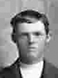
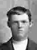
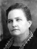
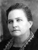

George and Martha Turner Lovell Family Group
Home
Histories
Charts
Photos
Maps
Restricted
News
Info
Contact
 symbol is a link to a history, and the chart
symbol is a link to a history, and the chart  symbol is a link to a family group chart.)
symbol is a link to a family group chart.)|
John Lovell and Ann PARSONS |
----> |   |
George Lovell Born 22 NOV 1835 Whitby,Ontario,Canada Died 1 JUL 1899 Oak City,Millard,UT Martha Turner Born 2 SEP 1843 Milltown,Somerset,New Jersey,USA Died 23 APR 1915 Oak City,Millard,Utah,USA Married 28 JAN 1862 Deseret,Millard,Utah,USA |
|
 |
Lorenzo Turner Lovell Born 2 DEC 1877 Oak City,Millard,Utah,USA Died 3 NOV 1953 Oak City,Millard,Utah,USA Married Margaret Ann Finlinson 5 JUN 1901 Salt Lake City,Salt Lake,Utah,USA The 1st child of George Lovell and Martha Turner |
|
Elizabeth Mary Lovell Born 27 JUN 1886 Deseret,Mllrd,UT Died 19 NOV 1939 The 2nd child of George Lovell and Martha Turner |
   |
Martha Rose Anne Lovell Born 17 JAN 1864 Deseret,Millard,UT Died 10 AUG 1905 Grover,Uinta/lincoln,Wyoming Married George Lyman Dutson 15 JUN 1882 Salt Lake City,Salt Lake,UT The 3th child of George Lovell and Martha Turner |
|
Adelea Elzinga Lovell Born 6 APR 1880 Oak City,Millard,UT Died 23 JUN 1972 Salt Lake City,SL,UT Married Charlie Nelson 5 JUN 1897 Nephi,Juab,UT The 4th child of George Lovell and Martha Turner |
* |
George Henry Lovell Born 11 OCT 1862 Deseret,Millard,UT Died 15 APR 1863 Deseret,Millard,Utah The 5th child of George Lovell and Martha Turner |
|
Mary Elizabeth Lovell Born 27 JUN 1866 Deseret,Millard,UT Died 9 NOV 1939 Logan,Cache,UT Married John Henry Carling 3 APR 1884 Salt Lake City,Salt Lake,UT The 6th child of George Lovell and Martha Turner |
Joseph William Lovell Born 2 APR 1868 Deseret,Millard,Utah Died 6 SEP 1924 Oak City,Millard,Utah Married Caddie Roper 15 FEB 1897 Oak City,Millard,Utah The 7th child of George Lovell and Martha Turner |
* |
David Edmond Lovell Born 27 JAN 1870 Oak City,Millard,UT Died 21 JAN 1871 Oak City,Millard,Utah The 8th child of George Lovell and Martha Turner |
   |
John Collier Lovell Born 29 JAN 1872 Oak City,Millard,UT Died 8 FEB 1964 Oak City,Millard,UT Married Lucy Levern Broadhead 1 SEP 1897 Manti,Sanpete,UT
The 9th child of George Lovell and Martha Turner |
 |
Susannah Lovell Born 4 JAN 1874 Oak City,Millard,UT Died 17 NOV 1927 Hinckley,Millard,UT Married James Nathaniel Dutson The 10th child of George Lovell and Martha Turner |
|
Benjamin Godfrey Lovell Born 11 FEB 1876 Oak City,Millard,UT Died 16 DEC 1964 Leamington,Millard,Utah Married Maria Amelia MC_CARDELL 22 APR 1908 Manti,Sanpete,Utah The 11th child of George Lovell and Martha Turner |
|
Lydia May Lovell Born 1 MAY 1882 Oak City,Millard,UT Died 26 JAN 1978 Salt Lake City,Salt Lake,UT Married John Desmond Evans 26 JAN 1903 Nephi,Millard,UT The 12th child of George Lovell and Martha Turner |
James Edward Lovell Born 1 JUN 1884 Oak City,Millard,UT Died 6 FEB 1920 Leamington,Millard,UT Married Ann Hansine Nielson 4 SEP 1907 Manti,Sanpete,UT The 13th child of George Lovell and Martha Turner |